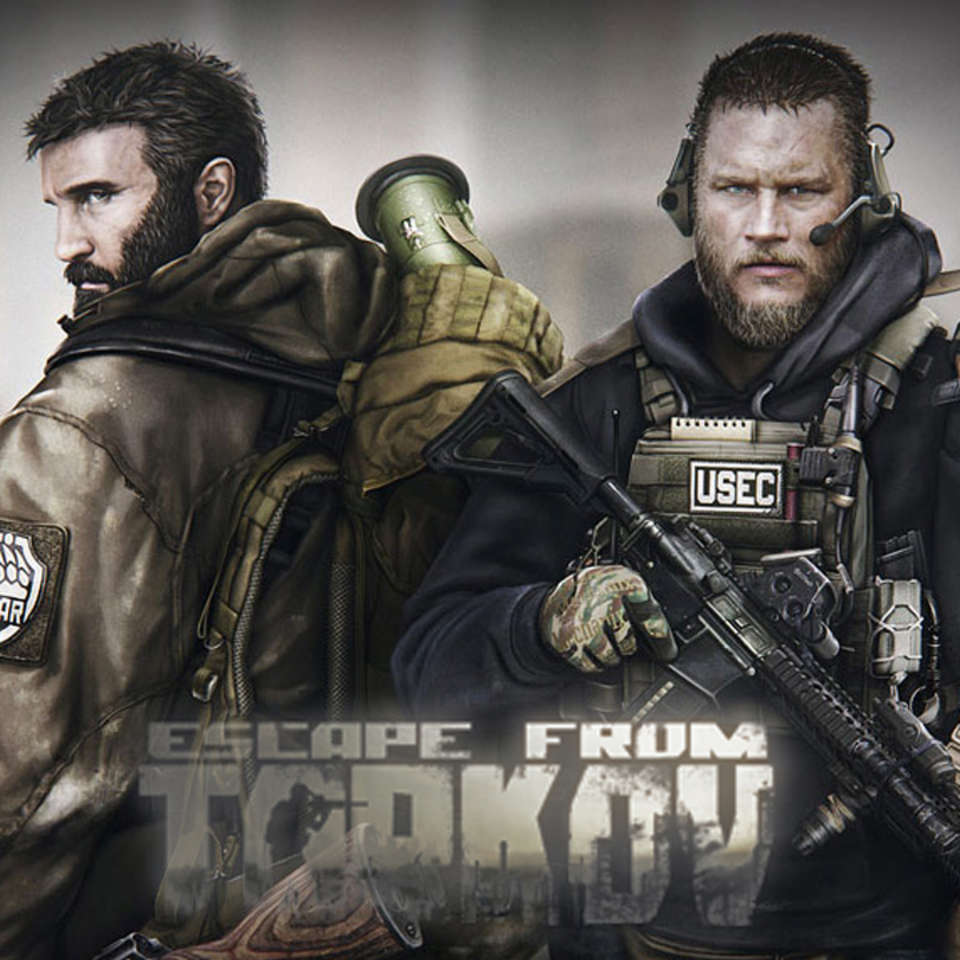

Hello! This post is a review of Apple’s AirPods. First, let’s talk about the design. They are shaped the same way the previous wired apple headphones are, because that design was shaped nicely and fit well into pretty much everyone’s ear. The nice thing about AirPods is of course they are wireless. This makes them feel much lighter, and you have a lot more maneuverability. I would recommend trying wireless headphones when you work out or go on a run. The battery life is very good. AirPods will last you through a whole day at work on one charge, and if you work really long hours, you still don’t need to bring your charger. AirPods come with a case that charge your pods when you set them in it. The case is good size, not too small where you would lose it, and not too big where it feels bulky. There are only two bad things I can think about AirPods. The first is the price. I got mine as a Christmas gift, and I think this is the perfect gift to give or receive. The second is talking on the phone. AirPods make it super easy to talk on the phone since you don’t have to hold it up to your head, but you might look like you’re talking to yourself since they are so small.
By Justin Baker on
Hi! This is my second blog post. For this one, I will be reviewing the game Escape from Tarkov made by BattleState Games. To me, this is the most innovative, realistic and unique shooter game on the market today. The graphics and map design are incredibly immersive. The guns and mechanics are fun and make the game feel like a military simulation. The hit boxes are visible to the player so when you get hit in a specific part of your body you have to heal that part. The healing animations and types of heals are amazing. The way this game uses RPG elements like leveling up your characters skills and the quests that are given by the dealers makes for hundreds of hours of playability. One especially unique thing is the flea market. The flea market is a player-run way of buying and selling items. It adds a whole new way to make money and it is interesting to see how dynamic the prices can be. The fact that you lose your gear if you die creates a feeling of fear not many other games can compare to. This game makes you uncomfortable in so many situations, but when you feel your heart beating loudly, it makes the game a lot more interesting. I would recommend this game to everyone.
By Justin Baker on